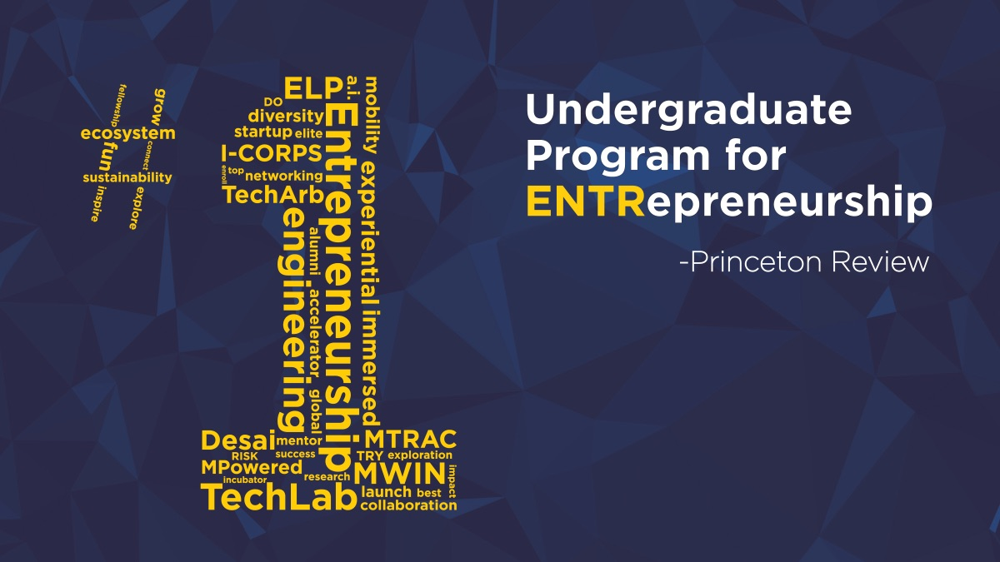
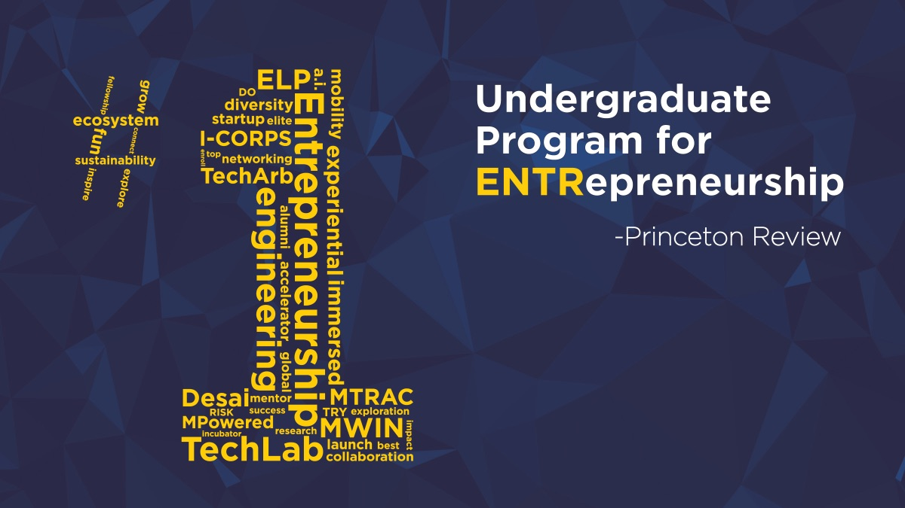
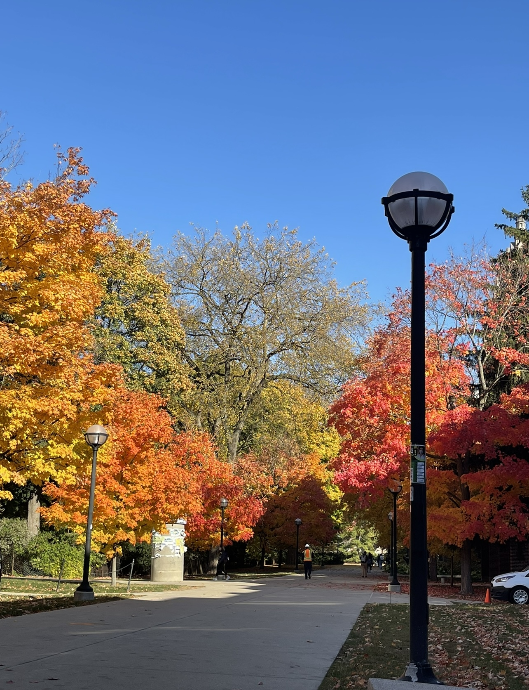
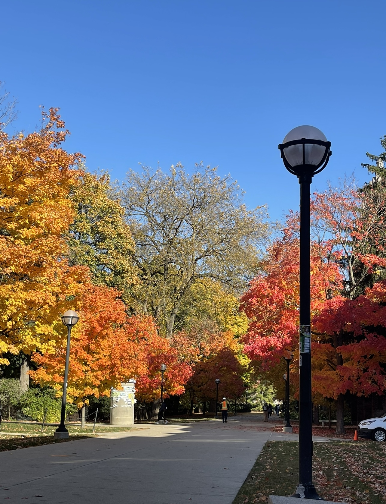
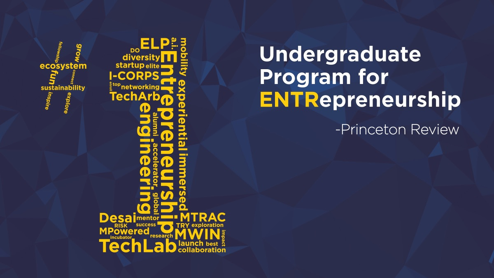
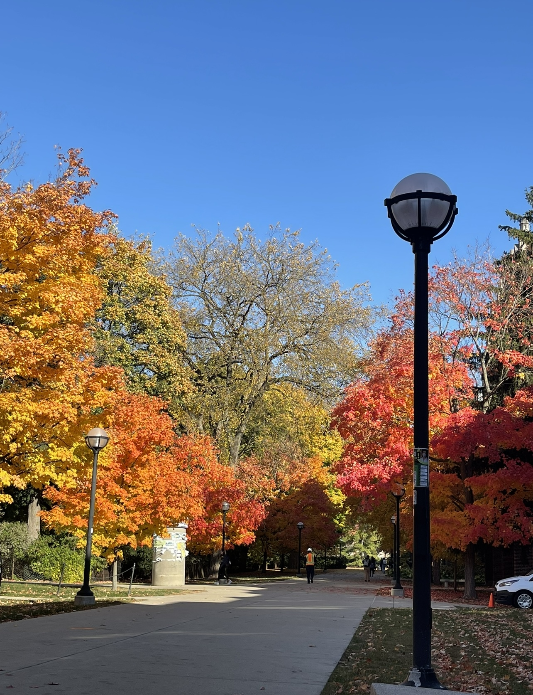

Featured Work
Identified trends in YouTube algorithms and thumbnails targeted towards audiences 12 as a Research assistant for the University of Michigan Communication & Media Department during the 2021-2022 school year.
Conducted customer research in order to design a platform to meet the needs of patients and medical professionals.
Analyzed the recently developed platform "Dispo" to complete a full User Experience Review of the platform.
Wrote a blog about the consequences of feeding into the addiction of social media.

 

 

Identified trends in YouTube algorithms and thumbnails targeted towards audiences 12 as a Research assistant for the University of Michigan Communication & Media Department during the 2021-2022 school year.
Conducted customer research in order to design a platform to meet the needs of patients and medical professionals.
Analyzed the recently developed platform "Dispo" to complete a full User Experience Review of the platform.
Wrote a blog about the consequences of feeding into the addiction of social media.


More info about me
And more info about me